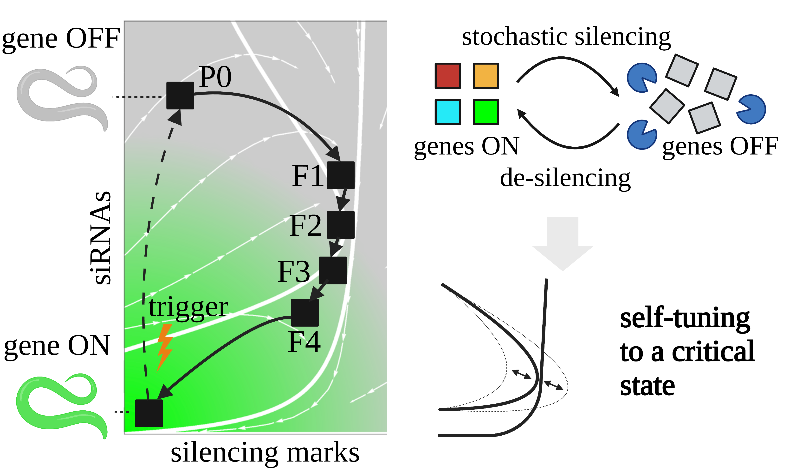
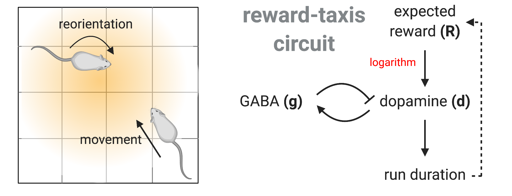
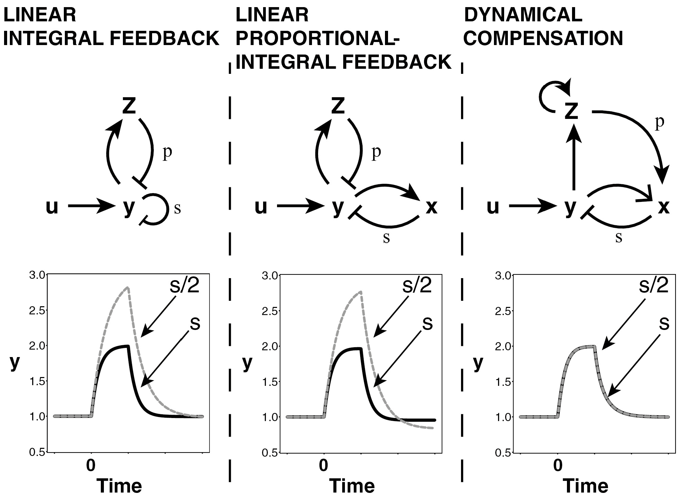
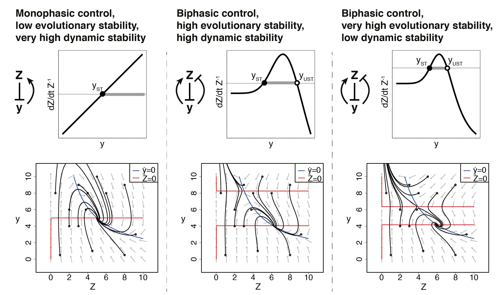
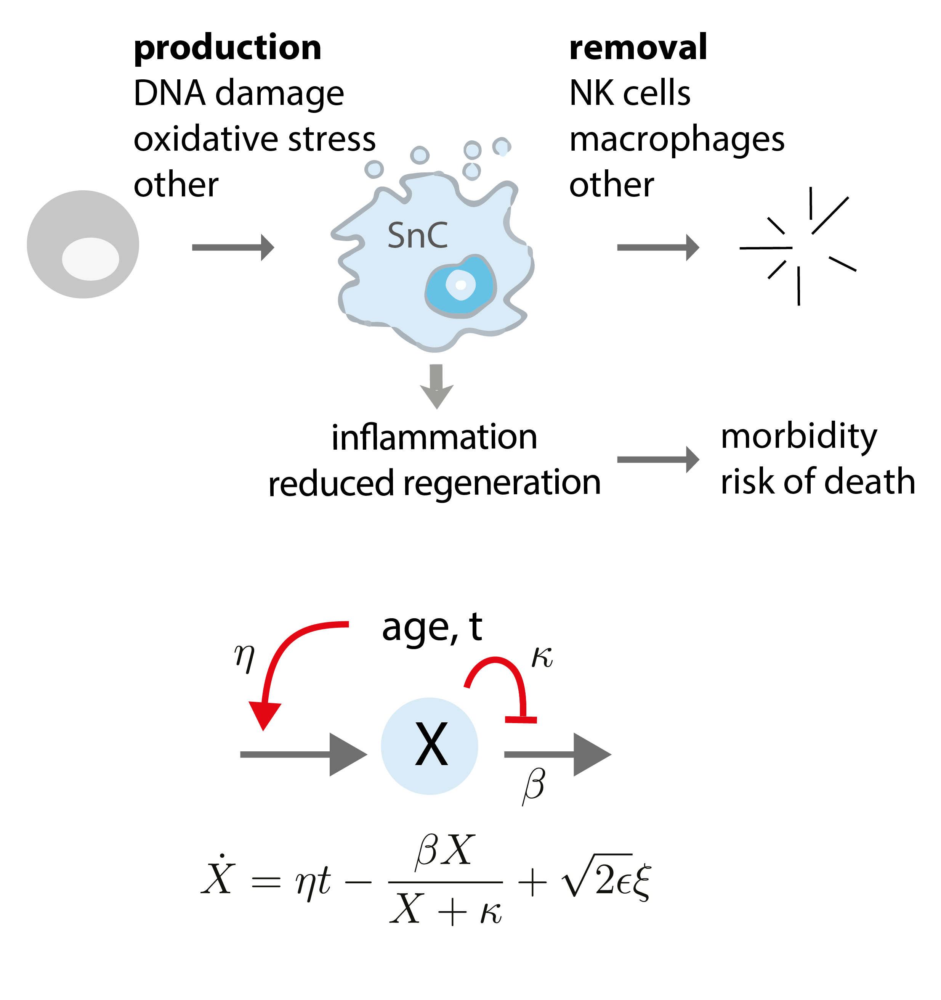

Research overview
Biological systems (like our cells and tissues) are complex and made of many interacting components. Our goal is to understand how these systems achieve their remarkable functionality.
Our approach to this is based on developing predictive models to understand how biological mechanisms work, and developing mathematical and computational theories to understand the adaptive functionallity and trade-offs these mechanisms.
Current research themes: I recently became interested in biological memory. Recording, using, and forgetting memories is a remarkable ability of biological systems. I am interested in how efficient memory retention and processing in biological systems emerges from genetic and cellular circuits in various systems, including epigenetic and immune memory. I also have a long-standing interest in human physiology. Human physiology is a great testing ground for theories on how robust functionality can emerge from the coupled decision-making of many cells, and how it dysfunctions in disease and aging. I am also interested in biological circuits for movement regulation, and in biological circuits that regulate evolutionary dynamics.
Joining the lab: Our research projects typically require analyzing stochastic, nonlinear systems, as well as coding and data analysis. Potential candidates should have thorough quantitative training, such as (but not limited to) a background in applied mathematics or theoretical physics. While a background in biology is generally not needed, a strong motivation to learn and engage with biological questions (and possibly collaborate with experimental groups) is essential. If you find our research interesting and think you might make a good fit, do not hesitate to get in touch.
Self-organization of biological memory

Reward-taxis and the design principles of movement regulation
The dopamine circuit as a reward-taxis navigation system.

Dynamical compensation and principles of physiological regulation
Dynamical compensation in physiological circuits.
A new model for the HPA axis explains dysregulation of stress hormones on the timescale of weeks.
An opponent process for alcohol addiction based on changes in endocrine gland mass.
Dynamics of thyroid diseases and thyroid-axis gland masses.
Rules for body fat interventions based on an operating point mechanism.

Tradeoffs between dynamics and resilience to invading mutants
Biphasic response as a mechanism against mutant takeover in tissue homeostasis circuits.

Aging as saturation of damage removal
Senescent cell turnover slows with age providing an explanation for the Gompertz law.
Senescent cell accumulation mechanisms inferred from parabiosis.
Senescent cells and the incidence of age-related diseases.
Damage dynamics and the role of chance in the timing of E. coli cell death.
